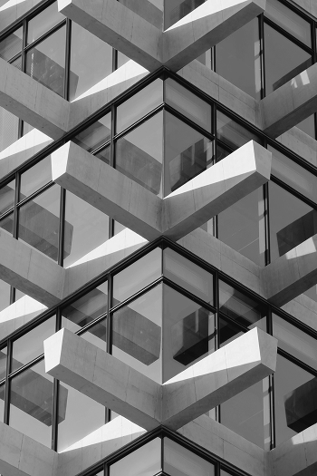

RÉSIDENCE · 2025
Lumière Épurée

Résidence contemporaine baignée de lumière naturelle
Nous avons imaginé un lieu où la lumière devient matière. Les lignes pures, les tons minéraux et les volumes ouverts composent une atmosphère apaisante, sobre et intemporelle.
01 — LE CONCEPT
Architecture et design
Chaque détail a été pensé pour révéler la simplicité des formes et la beauté des matériaux. Les transitions entre les espaces sont fluides, tandis que les ouvertures cadrent la lumière et accompagnent le regard vers l’extérieur.


02 — LA MATIÈRE
Lumière naturelle
Le projet fait la part belle aux textures et aux contrastes subtils. La lumière évolue au fil de la journée, souligne les surfaces et crée une atmosphère différente à chaque instant, tout en conservant une grande sérénité.